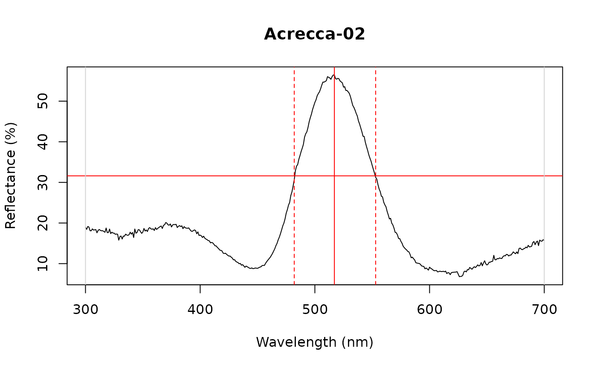
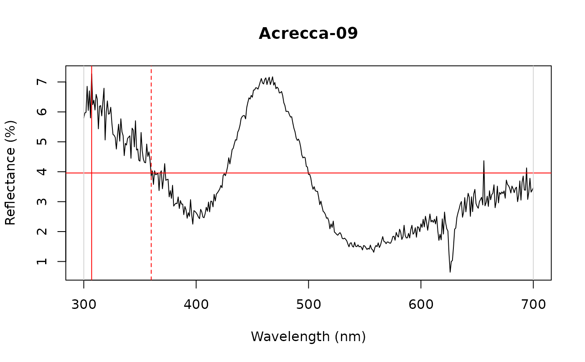
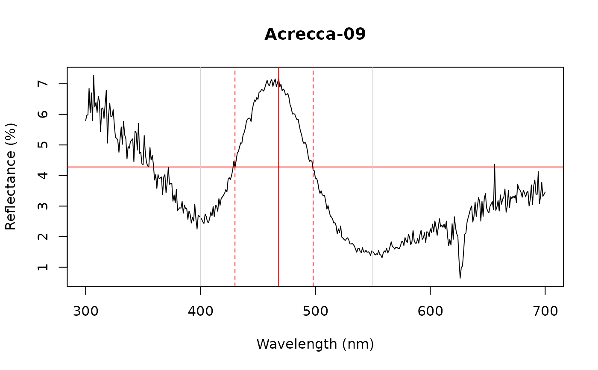

Calculates height, location and width of peak at the reflectance midpoint (FWHM).
Note: bounds should be set wide enough to incorporate all minima in spectra. Smoothing
spectra using procspec() is also recommended.
peakshape( rspecdata, select = NULL, lim = NULL, plot = TRUE, ask = FALSE, absolute.min = FALSE, ... )
| rspecdata | (required) a data frame, possibly of class |
|---|---|
| select | specification of which spectra to plot. Can be a numeric vector
or factor (e.g., |
| lim | a vector specifying the wavelength range to analyze. |
| plot | logical. Should plots indicating calculated parameters be returned?
(Defaults to |
| ask | logical, specifies whether user input needed to plot multiple plots
when number of spectra to analyze is greater than 1 (defaults to |
| absolute.min | logical. If |
| ... | additional arguments to be passed to plot. |
a data frame containing column names (id); peak height (max value, B3), location (hue, H1) and full width at half maximum (FWHM), as well as half widths on left (HWHM.l) and right side of peak (HWHM.r). Incl.min column indicates whether user-defined bounds incorporate the actual minima of the spectra. Function will return a warning if not.
#> id B3 H1 FWHM HWHM.l HWHM.r incl.min #> 1 Acrecca-02 56.4446 517 71 35 36 Yespeakshape(teal, select = 10)#> id B3 H1 FWHM HWHM.l HWHM.r incl.min #> 1 Acrecca-09 7.2747 307 NA NA 53 Yes# Use wavelength bounds to narrow in on peak of interest peakshape(teal, select = 10, lim = c(400, 550))#> Warning: Consider fixing “lim” in spectra with “incl.min” marked “No” to incorporate all minima in spectral curves#> id B3 H1 FWHM HWHM.l HWHM.r incl.min #> 1 Acrecca-09 7.173 468 68 38 30 No